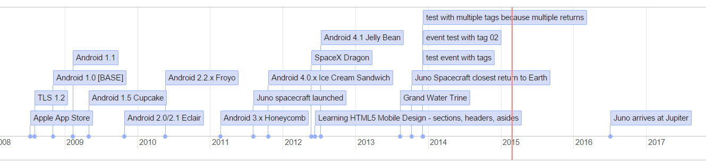
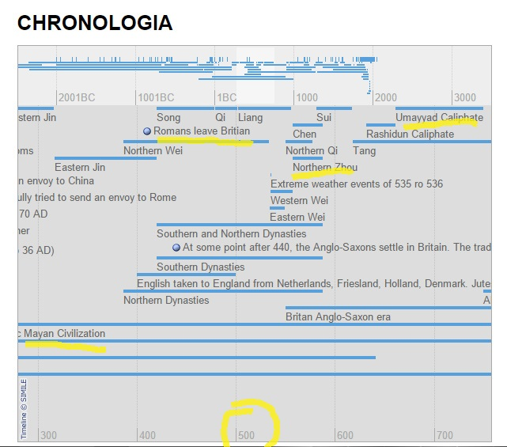

Here is an image, you can interact with the timeline further down...

Timeline uses the vis.js visualization library to dynamically display events throughout human history.
The events are from my own data. I combine my data with the vis.js timeline; together they make the dhart Timeline.
Almost 1000 events are displayed from -3500BC "Writing develops" to 2016AD "Juno spacecraft arrives at Jupiter"
A larger goal of this project is using data from anywhere such as wikipedia, data that organizations have themselves, and for individuals to document their own lives.
Understanding: Because of the number of events, it is not possible to display everything at once. You can scroll across and up/down and also zoom in/out of specific times. You can view thousands of years or down to milliseconds.
The timeline can be set with different display options. Currently, there are 2 examples for you.
First example: The first timeline example is directly below. It is set to a fixed size to allow you to familiarize yourself with using the timeline. The second example further down shows the timeline expanded and is a much grander vision of history.
Play with the timeline to get exactly the view you want.
In Example 1, when zoomed out, you may have noticed sometimes there are no events displayed on the timeline. This is because most of the events are within 1900AD to 2000AD. Because the events are stacked, it creates a vertical scrolling issue. You can zoom-in and out to fix that. Play with the timeline to get exactly the view you want. These types of display issues will be corrected in code over time, but they are also part of displaying many events.
There are many features which the first example does not show.
The above features as well as a wide range of display options and "app-like" functionality will be added over time. I upload my code to github and programmers may fork the code there.
Example 2 is on a seperate page. Example 2 is large, it is not fixed-size. It will expand vertically to display as many events as it can at once. You may have to scroll up and down as well as across. Example 2 works better on a computer screen than a tablet/phone.
You may have to use the right-hand scroll-bar of the window as well as dragging within the timeline to see everything.
Click here to View Example 2
That is all for now. You can close this tab/window. OR
View my original version of the timeline "CHRONOLOGIA" which used code from the MIT SIMILE project. CHRONOLOGIA may not display correctly on all devices as the code is from 2009, but it has many features which are not available in the vis.js version.

There is also dhart.co which I use to track my projects and host my blog.
© 2015 damionpaulhart